|
Сотрудники
Проекты
Публикации
Профессор
Ю.М.Свирежев
Памяти
Е.А.Денисенко
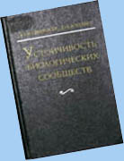
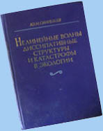
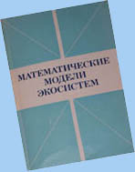
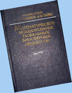
|
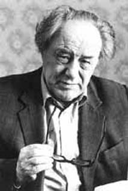 Н.Н. Моисеев
|
В
сентябре 1976 года по инициативе Никиты Николаевича Моисеева в
Вычислительном Центре Академии Наук СССР была образована новая Лаборатория
математической экологии, возглавил которую Юрий Михайлович Свирежев. Его
первыми сотрудниками и учениками были В.П. Пасеков, А.М. Тарко,
Н.К. Лукьянов, Д.О. Логофет, Д.А. Саранча,
Н.Н. Тимофеев, В.Н. Разжевайкин. Это было время, когда
общенаучный процесс математизации знания начал активно распространяться на
новые области в биологических науках и, в частности, в экологии и
генетике, и Лаборатория математической экологии – первое научное
подразделение в стране с подобным названием – принимала в этом процессе
самое активное участие.
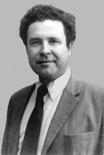 Ю.М.
Свирежев |
В эти годы сотрудниками Лаборатории под
руководством Ю.М. Свирежева в области математической генетики
разработаны модели микроэволюции, получены общие уравнения динамики
эволюционирующих популяций, указаны границы применимости классических
уравнений популяционной генетики, получены обобщения «фундаментальной
теоремы естественного отбора» Р.Фишера, сформулированы общие вариационные
принципы популяционной генетики, построена математическая теория
генотипического полиморфизма в популяциях. Эти результаты позволили с
единой точки зрения объяснить результаты многочисленных генетических
экспериментов и наблюдений над генотипической динамикой реальных
популяций. Для математических моделей динамики взаимодействующих
биологических видов была разработана теория устойчивости биологических
сообществ – один из важнейших разделов математической экологии. Строгий
вывод основных уравнений математической экологии на основе законов
сохранения вещества и энергии позволил установить границы применимости
классических уравнений Лотки–Вольтерра при моделировании биологических
сообществ. Строгое математическое обоснование и новая формулировка
«принципа плотной упаковки» видов (принципа McArthur Principle of dense
packing) в пространстве экологических ниш позволили сделать важные оценки
перспектив интродукции (или инвазии) новых видов в конкурирующие
сообщества. Вышедшая в 1978 году книга Ю.М. Свирежева и
Д.О. Логофета "Устойчивость биологических сообществ" (английский
перевод издан в 1983г.) быстро стала классикой математической экологии.
В эти годы в лаборатории также активно велись исследования,
имеющие своей целью развитие методов математического моделирования
глобальных биосферных процессов и изучения условий, обеспечивающих
совместную эволюцию окружающей среды и человеческого сообщества. Была
предпринята попытка формализовать концепции русской классической школы
естествоиспытателей, в которой Человек был неотъемлемой частью Биосферы, а
эволюция общества – коэволюцией Человека и Биосферы. Были найдены подходы,
позволяющие формализовать описание экологических процессов на глобальном
уровне и разработана система моделей, имитирующих биосферные процессы. Эти
модели известны сейчас как Московская Биосферная Модель. Предложенный
подход надолго определил пути развития глобального моделирования.
В 1979 году по инициативе академика Анатолия Алексеевича
Дородницына под эгидой авторитетного международного органа SCOPE
(Scientific Committee on Problems of the Environment) был организован
международный научный проект по переувлажненным землям "Ecosystem Dynamics
in Freshwater Wetlands and Shallow Water Bodies". Научное руководство
проекта возглавили ставшие сейчас уже классиками системной экологии и
экологического моделирования профессора Бернард K. Паттен (Bernard C.
Patten, США) и Свен Э. Йоргенсен (Sven E. Jorgensen, Дания), а
практическое осуществление (весьма масштабных) мероприятий проекта всецело
легло на плечи сотрудников Лаборатории и аспирантов Ю.М. Свирежева. В
частности, Д.О. Логофет временно работал «директором проекта», т.е.
руководителем соответствующего структурного подразделения в Центре
международных проектов Госкомитета СССР по науке и технике. В рамках этого
проекта сотрудниками Лаборатории впервые в мировой практике была построена
нелинейная модель совместного круговорота органического вещества и азота в
локальной экосистеме переходного болота, которая учитывала структуру
фитоценоза и конкуренцию за минеральное питание. Была построена
имитационная модель, с помощью которой можно было количественно оценить
такие характеристики водного режима болота, как средняя длительность
весеннего подтопления корней древостоя, вероятность подтопления корней в
течение всего вегетационного периода, диапазон колебаний уровня грунтовых
вод. Модель позволила оценить, насколько сильно изменятся
среднемноголетние гидрологические условия при изменении фитоценоза.
Впервые было воспроизведено формирование грядово-мочажинного комплекса
(регулярной структуры понижений и возвышений на поверхности болота) как
возникновение диссипативной структуры среди решений уравнения "реакции –
диффузии". В рамках построенной пространственно распределенной модели
формирования рельефа верховых болот удалось воспроизвести и существенные
черты динамики болот этого типа: формирование купола и зависимость рельефа
от линейного размера болота.
В начале 80-х в лаборатории появилась
молодежь: Алексей Воинов, Михаил Смирнов, Михаил Семенов и Петр Рачко.
Сотрудники Лаборатории занимались всем, что было интересно: Алексей Воинов
– моделями пресноводных экосистем (озера, реки, водохранилища), Михаил
Смирнов – генетикой, Михаил Семенов – агроэкосистемами, Петр Рачко –
лесными экосистемами. Одна за другой выходили книги: книга
В.Ф. Крапивина, Ю.М. Свирежева, А.М. Тарко о глобальном
моделировании, Ю.М. Свирежева и В.П. Пасекова об эволюционной
генетике и другие.
В эти годы сверхприоритетной задачей для
международного сообщества ученых становится оценка последствий ядерной
войны и доведение этой оценки до сведения как правительств государств, так
и широких слоев населения. Самое активное участие в этой деятельности
принял ВЦ АН СССР и, в частности, наша лаборатория. Группой
исследователей, возглавляемой профессором Ю.М. Свирежевым, на основе
доступной в тот период информации физического, химического, биологического
(особенно радиобиологического) характера были разработаны модельные
подходы, дающие количественные оценки долговременных экологических
последствий глобального ядерного конфликта. Результаты работы этой группы
были опубликованы в изданной в ВЦ АН СССР (1985) на английском языке книге
"Экологические и демографические последствия ядерной войны". Эта книга
быстро стала весьма известной. Многие ее материалы вошли в знаменитый
двухтомник СКОПЕ “Последствия ядерной войны для окружающей среды”. В
последствии книга была переведена на русский, испанский и немецкий языки.
В 1985 г. Лаборатория оказалась в самом центре типичного
общественного движения времен "перестройки" – против проекта переброски
части стока северных рек на юг (в обиходном языке просто "переброски
рек"). Ю.М. Свирежев стал руководителем неформальной группы, в задачу
которой входило показать ошибочность моделей и прогнозов (в частности,
прогноза динамики уровня Каспийского моря), на которых держалось "научное
обоснование проекта". И естественно, почти вся лаборатория участвовала в
работе этой группы. Эта деятельность сыграла важную роль в прекращении
работ по переброске северных рек.
Примерно в то же время начали
активно развиваться наши контакты с "космическими" медиками из Института
медико-биологических проблем. И в результате Лаборатория математической
экологии превратилась в Отдел математического моделирования в экологии и
медицине. Возникли очень тесные связи между Отделом и
Информационно-вычислительным центром этого Института. Мы попытались
внедрить в работу ИВЦ и новые технологии обработки медицинской информации,
новые подходы к прогнозированию состояния здоровья человека в космических
полетах, и многое другое.
В конце 80-х в Лабораторию пришли бывшие
аспиранты Вычислительного Центра АН СССР Георгий Александров, Константин
Чевелев, Леонид Голубятников, а также выпускник МИИТа Сергей Веневский. В
эти годы разработаны новые подходы как в проблемах распространения
неоднородностей в «экологически активных средах» (вспышки лесных и
сельскохозяйственных вредителей, «безъимунные» эпидемии), так и в проблеме
возникновения дискретных структур в результате действия непрерывных
механизмов взаимовлияния компонентов экосистемы. Предложенный
эколого–энергетический метод оценки агроэкосистем позволил достаточно
объективно сравнить экологическую эффективность различных агроэкоситем и
систем сельского хозяйства на региональном уровне. С помощью этого метода
был проведен анализ сельского хозяйства Венгрии. На основе этого анализа
совместно с венгерскими учеными, предложена концепция “адаптивного
сельского хозяйства”. Результаты работы Отдела в эти годы нашли свое
отражение в книге Ю.М. Свирежева “Нелинейные волны, диссипативные
структуры и катастрофы в экологии”.
Начались 90-е годы – годы
кардинальных перемен в России. Отдел раскололся, часть его во главе с
Ю.М. Свирежевым перешла в Институт физики атмосферы РАН, образовав в
этом институте Лабораторию математической экологии, другая часть осталась
в Вычислительном Центре РАН, рассыпавшись по нескольким подразделениям. В
эти годы сотрудники Лаборатории принимали активное участие в исследованиях
по Государственным научно-техническим программам "Экологическая
безопасность России", "Экология России", "Глобальные изменения природной
среды и климата". В 1992 г. Ю.М. Свирежев был приглашен возглавить
Отдел системного анализа в Институте изучения последствий изменения
климата (Потсдам, Германия). И.о. заведующего Лабораторией был назначен
К.В. Чевелев, а затем в 1994 г. Л.Л. Голубятников, который
впоследствии был утвержден Научным Советом Института заведующим
Лабораторией. Это были тяжелые годы для нашего коллектива: финансирование
российских проектов практически прекратилось, несколько сотрудников уехали
работать за рубеж, талантливые аспиранты уходили из науки в бизнес… Но
Лаборатория выстояла и сохранила свой научный потенциал. За эти годы
разработаны методология и количественная оценка экологического риска на
локальном и региональном уровнях в условиях неопределенности и высокой
степени риска, модель для оценки суммарного обменного потока углерода
(т.е. разности между приходом углерода в первичную биологическую продукцию
растительного покрова и выделением его из мортмассы и органического
вещества почвы под воздействием био- и абиотических факторов) в
естественных наземных экосистемах, которая позволяет охарактеризовать
экосистемы как источники и стоки углерода и определить их интенсивность.
Разработана теория простейшей динамической модели глобального
распределения растительности. Создан новый тип марковских моделей
сукцессии, в котором вероятности переходов между состояниями процесса не
постоянны, а зависят от определенных климат-чувствительных факторов среды.
Эти факторы среды, в свою очередь, зависят от времени в силу принятых
сценариев изменения климата. Модели этого типа способны описывать
изменения растительного покрова в ходе сукцессии на фоне изменений климата
и антропогенного воздействия на экосистемы.
На рубеже веков
Лаборатория пополнилась молодыми сотрудниками, прошедшими школу нашей
лаборатории: сотрудниками стали Ольга Фельдман, Николай Завалишин, Ия
Клочкова. С 2002 г. заведующим Лабораторией является заместитель директора
Института по науке А.С. Гинзбург. В настоящее время в Лаборатории
ведутся исследования по следующим направлениям: математическое
моделирование потоков углерода в наземных экосистемах, исследование
отклика растительного покрова на возможные климатические изменения, анализ
возрастной структуры фитоценозов на основе матричных моделей,
эко-энергетический анализ агроэкосистем, анализ устойчивости и бифуркаций
в компартментальных моделях экосистем. Сотрудники Лаборатории занимаются
также разработкой теории и построением динамической модели глобального
распределения растительности, моделями сукцессий растительного покрова.
|
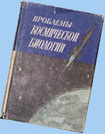
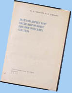
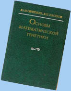
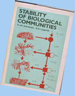
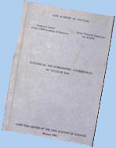
|